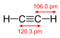

ethyne

Has synonym(s): acetylene
Definition: Acetylene (systematic name: ethyne) is the chemical compound with the formula C2H2 and structure H−C≡C−H. It is a hydrocarbon and the simplest alkyne. This colorless gas is widely used as a fuel and a chemical building block. It is unstable in its pure form and thus is usually handled as a solution. Pure acetylene is odorless, but commercial grades usually have a marked odor due to impurities such as divinyl sulfide and phosphine.As an alkyne, acetylene is unsaturated because its two carbon atoms are bonded together in a triple bond. The carbon–carbon triple bond places all four atoms in the same straight line, with CCH bond angles of 180°.
Source: Wikipedia
Wikipedia Page (Something wrong with this association? Let us know.)
Wikidata Page (Something wrong with this association? Let us know.)